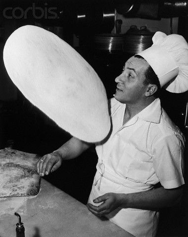

Our Story
Your Local Pizza Place was founded by Italian immigrant Giovanni Sasso at the turn of the 20th century. The pizzaria was originally established on Sullivan Street, in the heart of Greenwich Village. After losing his lease on Sullivan Street, Giovanni dismantled his original coal fired brick oven and moved to 1060 West Addison, where he continued to run and grow his business and refine his pizza recipe to perfection.
Today we are dedicated to carrying on his passion for a great tasting pizza and an amazing dining atmosphere. The pizzaria has been passed down from generation to generation and we continue to keep things just the way Giovanni had them all those years ago. This one is for you, Gio!